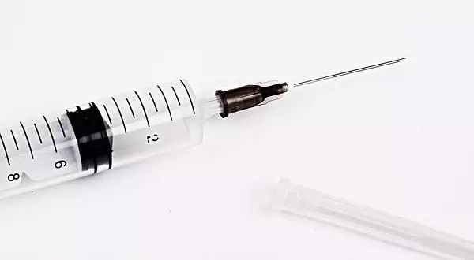

棱镜 | 重大医疗事故后的公正世界假设和基本归因谬误
原创：
肯
酷儿论坛
2017-02-09
酷儿论坛

motss2002
杭州酷儿论坛（motss.info）致力于为杭州及周边地区学生性少数人群提供一个多元、健康、平等的环境，促进自我认同和社会认可。

相信大家和瓜瓜一样，今天早上一觉醒来，就发现各个群里和朋友圈都在讨论浙江省中医院的重大医疗事故。随着时间的推移，不断有各种“小道消息”流传出来，一张张的微信聊天截图在群与群之间传播，引起了大家更热烈的讨论。具体内容在这里不多赘述，相信大家都有所耳闻，现在让我们来看看肯是怎么看的吧。如果你有什么想法，欢迎在下方留言与大家一起讨论。

今天浙江省卫计委通报的新闻引发了大家热烈的讨论。目前已知的信息为“一名治疗者在治疗过程中因个人原因在医院外感染艾滋病病毒”和“技术人员违反‘一人一管一抛弃’操作规程…导致部分治疗者感染艾滋病病毒”——新闻本身并未包含道德范畴的评价——但吃瓜群众们则远不满足于此。讨论的重点都会关注道德层面的原因：同性恋者骗婚滥交牵连他人罪该万死；技术人员缺失医德居心叵测报复社会。然后键盘侠们大笔一挥写下判词，只要社会消灭了这些道德上邪恶的存在，正义善良的人们就不会遭遇厄运。
如上图这样借机攻击性少数群体的言辞在这起重大医疗事故新闻的相关评论中并不少见。这一言辞固然令人愤怒和心寒，而劝说持有如此固执意见的人恐怕也只是对牛弹琴，但怀有相似心理的旁观者产生这样的想法有其心理学解释，也仍有劝告和解的余地。人们在遭遇厄运之时，比如在医院治病却感染恶疾，会狂热地寻找道德上的替罪羊，源于名为公正世界信念的心理。
公正世界假设是指人们认为世界本质上是具有道德属性的——善有善报恶有恶报，天道好轮回——尤其是遭遇飞来横祸之时，人们总会不满于不包含道德评价的原因而不由自主地要去寻求道德上的解释。虽然这一理论在20世纪60年代才被社会心理学家提出，但人类历史上基于公正世界信念为灾难做出道德归因的举动数不胜数。中国古时便有天人感应，神州大地水患蝗灾是天子失德的后果，外国亦有村庄收成欠佳是女巫作祟触怒上帝，必须烧死独居未婚女性的历史。这一信念的受害者是如此之广，即便是赵家人也得为地质现象背锅，更别提数不胜数被坚信公义的热情群众迫害致死的边缘群体了。而这些将他人作为祭品的行为，换来的则是自以为道德上无可指摘者们互相安慰“我们是道德上的完人，厄运绝不会发生在我们身上”。正如这次事件少有人会去反思公众对艾滋病患者感染原因的成见和对于患者的歧视，反而不少人趁机宣扬的同性恋等同于艾滋病，同性恋都该死，得艾滋后人生毫无价值等异性恋中心，健全中心主义的论调。但是公正世界假设仅仅能带来转瞬即逝的慰藉感，于理解厄运的发生和解决受影响者的遭遇并无任何帮助。

反对健全中心主义(Anti-ableism)并非指具有疾病，残疾等状况的人必须和健康人获得一样的对待，也并非否认感染疾病或是因故残疾等情况带来的不便和悲剧性；反对健全中心主义是反对将患病者、残疾者的人生终结在或是局限在其疾病、残疾状况上的叙事模式并因此拒绝为之提供资源或只愿意提供特殊化资源的现象。譬如认为艾滋病患者就该在家坐吃等死不和其他人接触，国家愿意提供免费治疗药物已是足够的恩赐，反对工作场合和校园的歧视毫无必要等。
所幸的是现代社会，尤其是心理学社会学等学科，对于这些现象早有分析，也给出了解决的方案，并在不断的摸索实践当中。司法体系已经抛弃必须寻找道德替罪羊的信念，而是基于事实和证据做出判决。而对于社会中的大众，克服思维的惯性，不屈从于对未知厄运可能性的恐惧，拒绝寻找道德上的替罪羊并非易事，但绝不是不可能的。
基本归因谬误同样是在20世纪60年代由社会心理学提出的概念，人们在面对事情发生的原因时会有归咎于人格本质和环境塑造两种可能；而由于公正世界假设这一信念，在面对他人的错误时，人们往往会选择将其归咎于该人群本质性的错误——比如得艾滋是因为某些人群本质上道德低下，而非没有做好保护措施这一技术性问题。但在这样的事件中，被忽略的环境性制度性的因素在其中扮演了什么角色应该是更为迫切的问题——为何一个正规公立医院会出现如此致命而低级的错误，而我们又需要怎样的制度才能尽可能避免这样悲剧的再次发生？如果制度已经足够完善，那我们或许需要更多的科普和心理建设工作来疏导不安的情绪，而非一味指责仅能依赖公正世界假设来理解此事的人们。
*推荐阅读*
文字 | 肯
编辑 | 文文
图片来自互联网
阅读
微信扫一扫
关注该公众号
关注该公众号
使用小程序